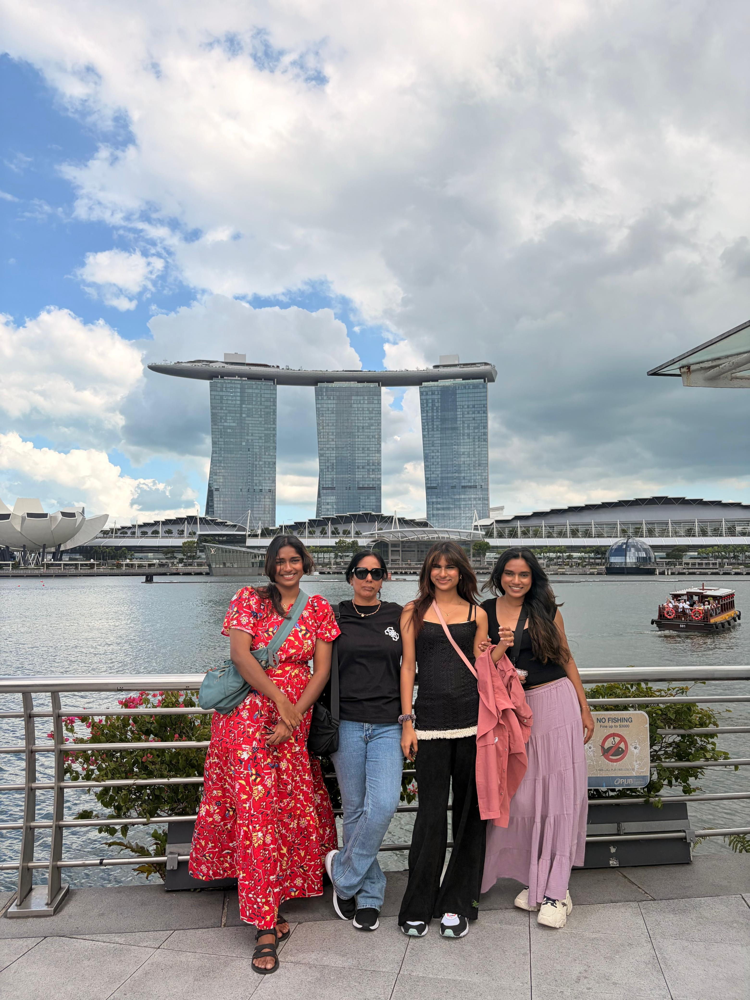
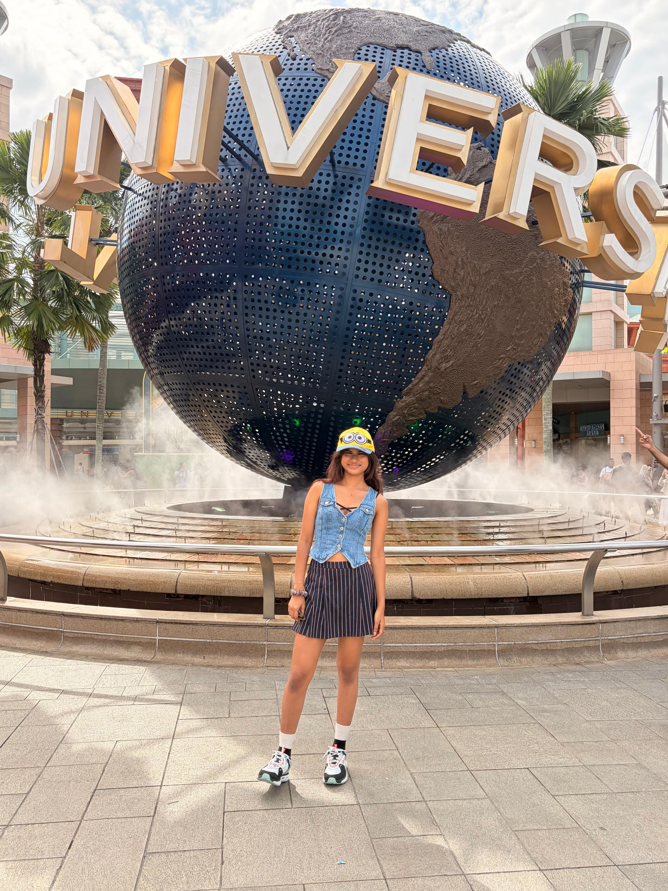
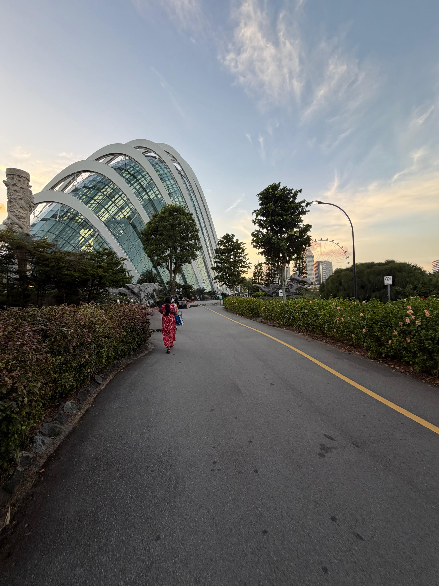
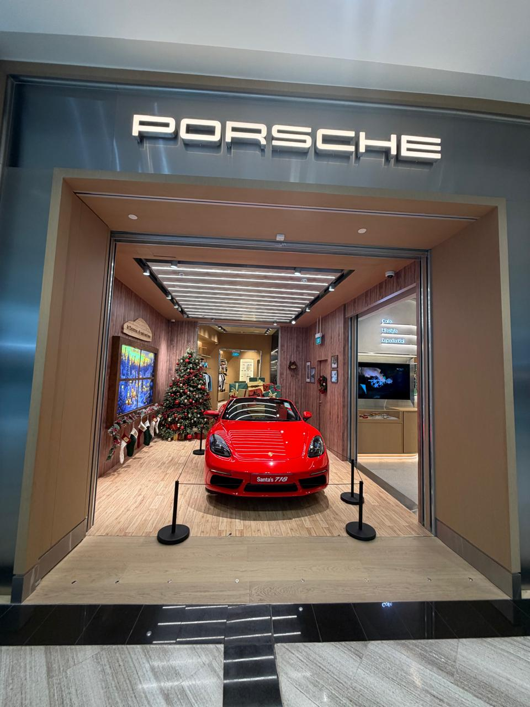

Singapore is a vibrant city-state in Southeast Asia, often described as a "City in a Garden" due to its seamless blend of futuristic urban planning and lush tropical greenery. It is a major global hub for finance, trade, and tourism, known for its safety, cleanliness, and diverse multicultural heritage. Singapore’s identity is built on four main ethnic groups: Chinese, Malay, Indian, and Eurasian. This diversity is most visible in its "heritage districts": Chinatown: Home to traditional shophouses, the Buddha Tooth Relic Temple, and bustling street markets. Little India: A sensory explosion of colorful murals, jasmine scents, and the 24-hour shopping giant, Mustafa Centre. Kampong Glam: The historic Malay-Arab quarter, centered around the stunning Sultan Mosque and the trendy boutiques of Haji Lane. Singapore is world-famous for its architectural "wow" factors: Marina Bay Sands: The iconic three-tower hotel topped with a massive boat-shaped infinity pool. Gardens by the Bay: Home to the "Supertrees" (vertical gardens) and the Cloud Forest, which features a massive indoor waterfall. The Merlion: A mythical half-lion, half-fish statue that serves as the national mascot, located at Merlion Park. Jewel Changi Airport: Often voted the world’s best airport, it features the Rain Vortex, the world’s tallest indoor waterfall. Food is a national obsession. The best way to experience it is at Hawker Centres—large open-air food courts where you can find Michelin-recognized street food for just a few dollars. Must-try dishes: Hainanese Chicken Rice, Chili Crab, Laksa, and Kaya Toast (coconut jam toast) for breakfast. Singapore has one of the world's most efficient public transport systems (the MRT), making it incredibly easy to navigate without a car. It is consistently ranked as one of the safest cities in the world. Despite its high population density, nearly half of the island is covered in green space, including the Singapore Botanic Gardens (a UNESCO World Heritage site). Sentosa Island is a dedicated resort island featuring Universal studios, beaches, and luxury hotels. The Singapore Zoo and Night Safari are world renowned for their "open" concepts that allow animals to live in naturalistic habitats rather than cages. Singapore is a luxurious, travel destination for many tourists which gains a high income from the tourism industry.



